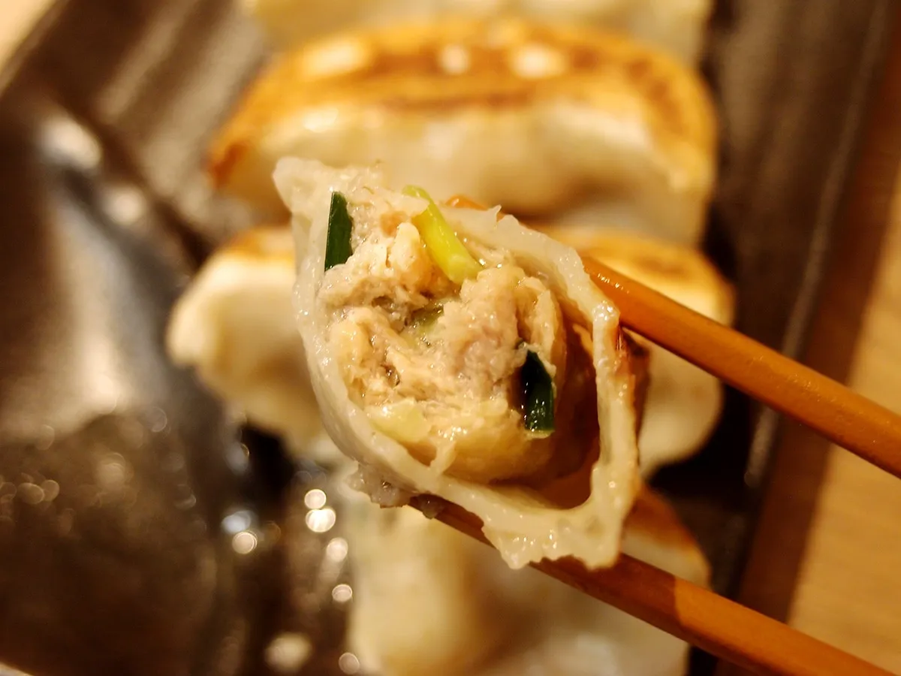

「プロテイン食＝まずい」をぶち壊す Delicious by Design
「美味い」、だから「続けられる」。
パサパサで、味気なくて、我慢して食べるもの——そんなプロテイン食品の常識を、独自の加工技術で壊しました。餃子として、普通に美味い。美味いから、毎日続く。
TECH 01
皮まで、タンパク質
皮に乳たんぱくを練り込む独自配合。味を薄めることなく、1個4.7gの高タンパクを実現しました。
TECH 02
パサつきゼロの保水加工
独自の保水設計で、高タンパクなのにジューシー。「プロテイン食はパサつく」への、製法からの答えです。
TECH 03
焼くだけ4分、お店の味
急速冷凍で作りたてを閉じ込める仮。解凍不要、フライパンひとつで失敗なく焼き上がります。

調理工程の写真
(撮影素材差し替え)
(撮影素材差し替え)

普段の食卓に
トレーニング後に
晩酌のお供に
→
美味いから、続けられる